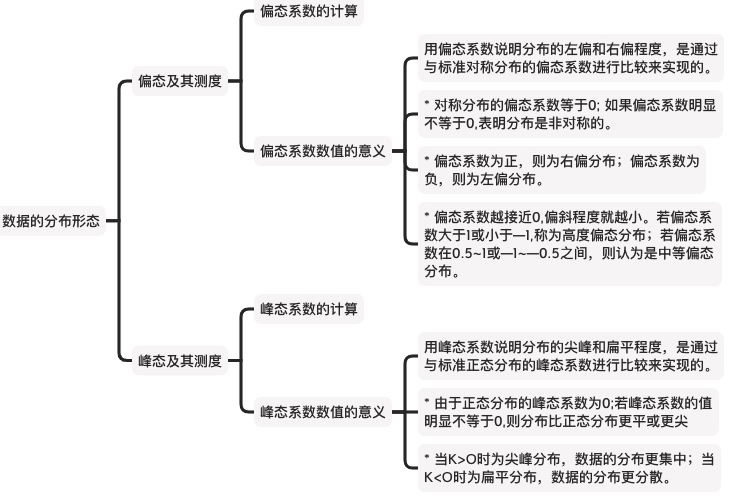
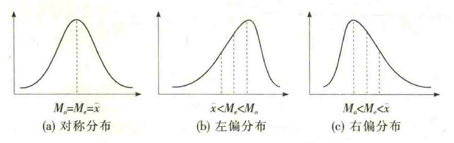
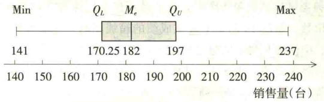
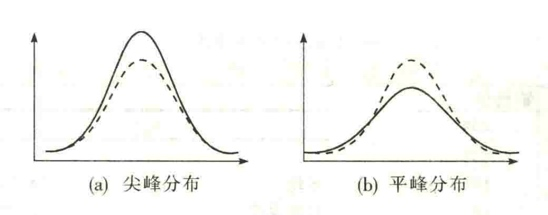

数据的分布形态：偏态系数与峰态系数
集中趋势和离散程度是数据分布的两个重要特征。对于正态分布，只要知道了均值和标准差，就可以确定其分布。
但对于未知的分布，要想全面了解数据分布的特点，我们不仅要掌握数据的集中趋势和离散程度，还需要知道数据分布的形状是否对称、偏斜的程度以及分布的扁平程度等，统称为分布的形态。
偏态和峰态就是对分布形态的测度。其中：
- “偏态”(skewness)一词是由统计学家皮尔逊(K.Pearson)于1895年首次提出的，它是对数据分布对称性的测度。
- ＂峰态”(kurtosis)一词是由统计学家皮尔逊于1905年首次提出的。它是对数据分布平峰或尖峰程度的测度。

偏态及其测度
前面咱讲了箱线图和直方图，也讲了众数、中位数和平均数，利用这些，很容易就能知道数据分布是对称、左偏还是右偏。


要是想要精准的测度偏态，其统计量是偏态系数(coefficient of skewness),记作SK。
根据未分组的原始数据计算偏态系数时，通常采用下面的公式：
根据分组数据计算偏态系数，可采用下面的公式：
式中，$s^3$ 是样本标准差的三次方。
利用Excel中的SKEW函数可以计算一组数值型数据的偏态系数。
- 如果一组数据的分布是对称的，则偏态系数等于O; 如果偏态系数明显不等于0,表明分布是非对称的。
- 偏态系数为正，则为右偏分布；偏态系数为负，则为左偏分布。
- 偏态系数越接近0,偏斜程度就越小。若偏态系数大于1或小于—1,称为高度偏态分布；若偏态系数在0.5~1或—1~—0.5之间，则认为是中等偏态分布。
峰态及其测度
利用绘图，也可以看出峰度是尖峰还是扁平。

要是想要精准的测度峰态，其统计量是峰态系数(coefficient of kurtosis)，记作K。
根据未分组数据计算峰态系数，可采用下面的公式：
根据分组数据计算峰态系数，可采用下面的公式：
式中，$s^4$ 是样本标准差的四次方。
利用Excel中的KURT函数可以计算一组数值型数据的峰态系数。
用峰态系数说明分布的尖峰和扁平程度，是通过与标准正态分布的峰态系数进行比较来实现的。
- 由于正态分布的峰态系数为0;若峰态系数的值明显不等于0,则分布比正态分布更平或更尖
- 当K>O时为尖峰分布，数据的分布更集中；当K<O时为扁平分布，数据的分布更分散。
总结
参考文献：
- 孙静娟主编.《统计学》.清华大学出版社.2015：18-20.
- 袁卫,刘超.《统计学--思想、方法与应用》(第二版).中国人民大学出版社.2011.
- 贾俊平,何晓群,金勇进.《统计学》(第七版).中国人民大学出版社.2018.